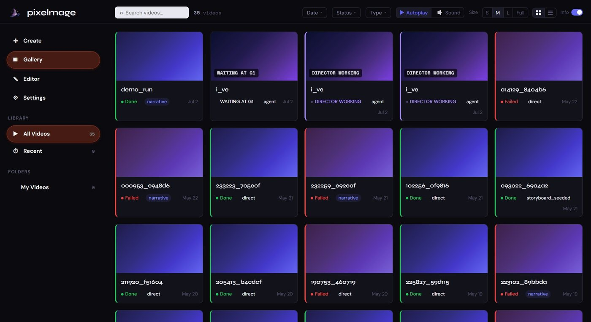

01
Pixel Mage
Music videos with an AI agent as creative director
The other eight
Click one to watch.
Infrastructure
AWS deployment
Pixel Mage ran at pixelmage.ai on AWS. Every piece below is defined in Terraform, and the same code also runs locally with no AWS account.
RequestsRoute 53DNS for the domainCloudFrontCDN, caches assets for a yearLoad balancerHTTPS, health checksAPI on FargateFastAPI in a container
Render jobsAPI on Fargatequeues the jobSQSwork queue plus a dead-letter queueWorker on Fargaterenders and keeps its leaseS3 and DynamoDBartifacts, jobs, users, run state
Around itECRimages scanned on pushSecrets Managermodel and OAuth keysIAMa role for each taskCloudWatch30 days of logsACMthe domain’s certificate
- Eighteen Terraform files define it all, from DNS and the certificate to the task definitions and IAM roles.
- One container image runs as both the API and the render worker, each with its own command.
- A render can take many minutes, so the worker extends its SQS lease every five minutes. A job that fails three times goes to a dead-letter queue.
- The worker runs as a single task on purpose. Two workers could write the same run’s state, so scaling out waits for a DynamoDB conditional claim.
- deploy.sh runs the tests, pushes the image to ECR and rolls the services. One flag scales everything to zero when it isn’t in use.
- The artifact bucket blocks public access and deletes run files after 90 days. The DynamoDB tables bill per request.
